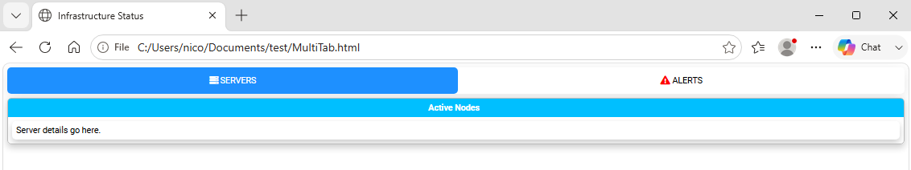
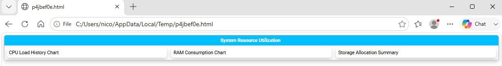
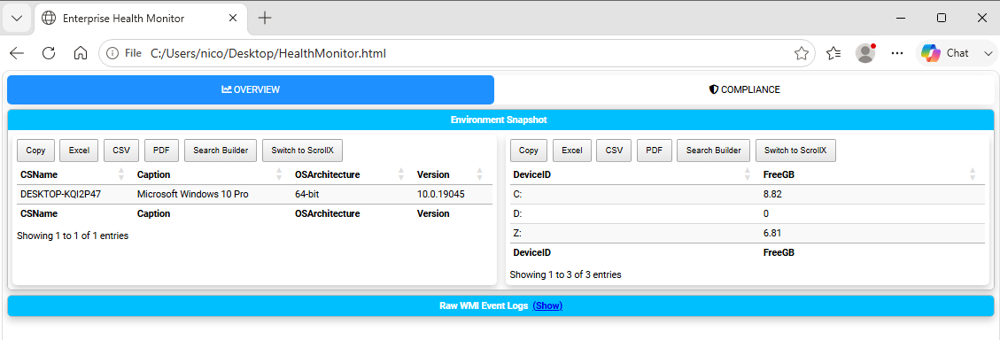

Chapter 6: Organizing Content with Tabs, Sections, and Panels
Report Structure Overview
As reports grow in scope and complexity, structure becomes as vital as the data itself. PSWriteHTML provides a modular, responsive layout engine based on a hierarchical grid model.
By strategically combining Tabs, Sections, Panels, and Columns, you can transform long, overwhelming operational logs into structured, executive-ready dashboards.
We’ve already introduced the basic building blocks in Chapter 3, but this chapter delves deeper into advanced layout techniques, best practices for multi-tab navigation, and strategies for creating visually appealing, data-rich reports.
Layout Architecture Deep-Dive
The layout engine uses a nested container model that flows from top-level navigation down to individual content cards:
New-HTML
└── New-HTMLTab (Top Navigation)
└── New-HTMLSection (Horizontal Row)
└── New-HTMLPanel (Card Container)
└── Content Widgets (Tables, Charts, Text, Diagrams)
Component Responsibilities
New-HTMLTab: Acts as the primary top-level menu item. Each tab hides or shows full logical sub-pages without reloading the browser.
New-HTMLSection: Functions as a full-width horizontal row or banner within a tab. Sections isolate distinct reporting topics (e.g., “CPU Metrics” vs “Memory Usage”).
New-HTMLPanel: Acts as a floating card or column block within a section. Panels wrap specific tables, charts, or text blocks with clean borders and background padding.
Mastering Tabs (New-HTMLTab)
New-HTMLTab allow you to pack dozens of metrics into a single standalone HTML document while keeping the viewport clutter-free.
Tab Customization Options
-Name: Text displayed on the navigation button.
-IconSolid / ``-IconRegular`` / ``-IconBrands``: Adds a FontAwesome icon to the tab title (e.g.,
-IconSolid 'server'or-IconBrands 'windows').-IconColor: Hex or color text for the FontAwesome icon (e.g.,
-IconColor 'Red'or-IconColor '#FF0000').
Tab Icon Example
New-HTML -Title "Infrastructure Status" -FilePath "MultiTab.html" -Show {
# Tab 1: Server Health with FontAwesome Icon
New-HTMLTab -Name "Servers" -IconSolid "server" {
New-HTMLSection -HeaderText "Active Nodes" {
New-HTMLPanel {
New-HTMLText -Text "Server details go here."
}
}
}
# Tab 2: Security Alerts with a Red Warning Badge
New-HTMLTab -Name "Alerts" -IconSolid "exclamation-triangle" -IconColor "Red" {
New-HTMLSection -HeaderText "Unresolved Incident Reports" {
New-HTMLPanel {
New-HTMLText -Text "Security incident details go here."
}
}
}
}
This is the result:

Fig. 17 A report organized with tabbed navigation.
Section & Column Grid Layouts (New-HTMLPanel and New-HTMLSection)
By default, every New-HTMLPanel added inside a New-HTMLSection expands to fill the available width. When multiple panels are placed within the same section, PSWriteHTML automatically arranges them into multi-column side-by-side card grids.
Creating Multi-Column Layouts
To create a 2-column or 3-column dashboard row, place multiple New-HTMLPanel blocks inside a single New-HTMLSection .
New-HTML -Show {
New-HTMLSection -HeaderText "System Resource Utilization" {
# Left Column (Panel 1)
New-HTMLPanel {
New-HTMLText -Text "CPU Load History Chart"
}
# Middle Column (Panel 2)
New-HTMLPanel {
New-HTMLText -Text "RAM Consumption Chart"
}
# Right Column (Panel 3)
New-HTMLPanel {
New-HTMLText -Text "Storage Allocation Summary"
}
}
}
This is the result:

Fig. 18 Three panels arranged in a responsive multi-column section.
Three panels placed inside a single section, automatically flowing into an aligned multi-column grid.
Collapsible Sections
For detailed logs or secondary diagnostic details that do not need to be visible immediately, make a section collapsible with the switch -CanCollapse and start it
collapsed with the related switch -Collapsed:
New-HTMLSection -HeaderText "Advanced Active Directory Diagnostics" -CanCollapse -Collapsed {
New-HTMLPanel {
New-HTMLText -Text "Detailed diagnostic logs and raw output parameters..."
}
}
Panel Styling & Backgrounds
You can highlight critical information by applying custom background shades or text styles directly to panels:
-BackgroundColor: Hex code or CSS color name for the panel background.
-HeaderText on New-HTMLSection: Adds a header above the section, which can also be made collapsible.
Complete Operational Dashboard Example
The following script combines multi-tab navigation, FontAwesome icons, status badges, multi-column sections, and a collapsible diagnostic section:
# 1. Mock Health Check Data
$Nodes = Get-CimInstance Win32_OperatingSystem | Select-Object CSName, Caption, OSArchitecture, Version
$Disks = Get-CimInstance Win32_LogicalDisk | Select-Object DeviceID, @{N='FreeGB'; E={[math]::Round($_.FreeSpace/1GB, 2)}}
# 2. Build Dashboard
New-HTML -Title "Enterprise Health Monitor" -FilePath "$env:USERPROFILE\Desktop\HealthMonitor.html" -Show {
# Tab 1: Executive Overview
New-HTMLTab -Name "Overview" -IconSolid "chart-line" {
# Top Row: Side-by-Side Cards
New-HTMLSection -HeaderText "Environment Snapshot" {
New-HTMLPanel {
New-HTMLTable -DataTable $Nodes -DisablePaging -DisableSearch
}
New-HTMLPanel {
New-HTMLTable -DataTable $Disks -DisablePaging -DisableSearch
}
}
# Bottom Row: Collapsible Raw Logs
New-HTMLSection -HeaderText "Raw WMI Event Logs" -CanCollapse -Collapsed {
New-HTMLPanel {
New-HTMLText -Text "Verbose event trace logs captured during system boot sequence."
}
}
}
# Tab 2: Security & Compliance
New-HTMLTab -Name "Compliance" -IconSolid "shield-alt" {
New-HTMLSection -HeaderText "Audit Trail" {
New-HTMLPanel {
New-HTMLText -Text "Status: OK. All local security policies match baseline standards."
}
}
}
}
This is the result:

Fig. 19 A complete operational dashboard with tabs, panels, icons, and collapsible content.
Layout Design Rules
Keep Related Metrics Grouped: Use a single
New-HTMLSectionfor metrics that need side-by-side visual comparison (e.g., Disk Space and Disk I/O).Limit Primary Tabs: Limit top-level tabs to 5–7 items to prevent tab-bar wrapping on lower-resolution screens.
Next Chapter: Chapter 7: Network Diagrams, Flowcharts, and Visualizations